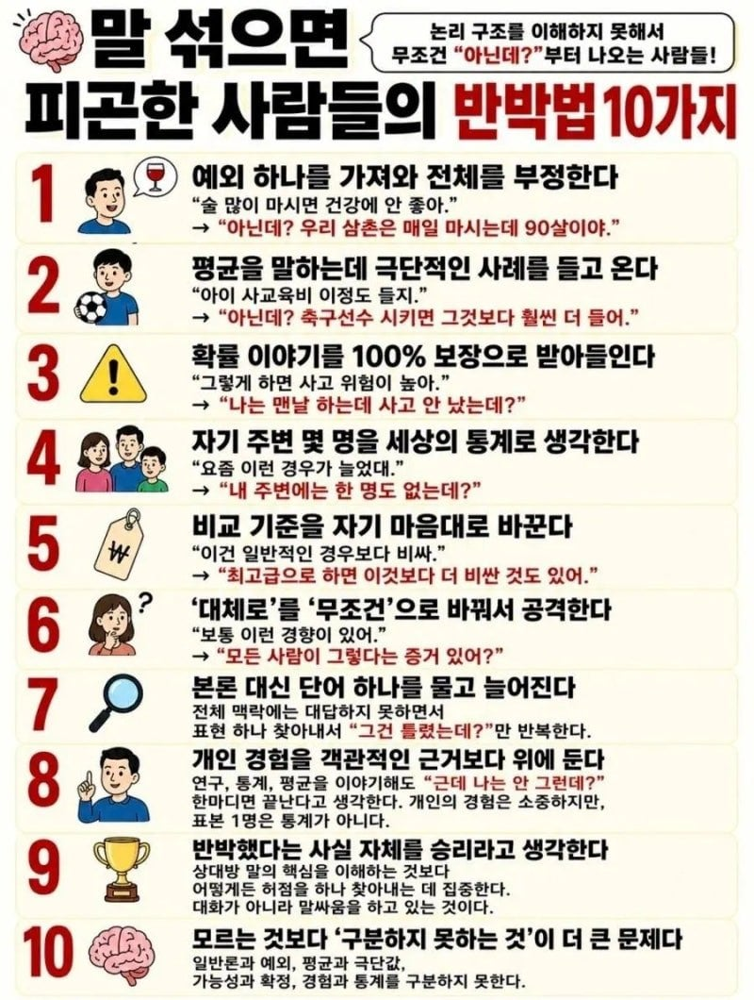

차은우 ㅋㅋㅋㅋ

차은우 ㅋㅋㅋㅋ
아닌데 나는 통속의 뇌인데
제발 통 속의 뇌
높은확률로 entp
아닌데! 이건 논리적으로 완벽한 반박인데!
지능이 낮아서 그러는 건 참겠는데 인성 병신이 그러면 못 참겠더라 ㅋ
이 병신들은 화법만 이상한 게 아니라 다른 행동들도 병신 같음 ㅋㅋ
ㄹㅇ 백번공감한다. 지능만 낮은거면 그러려니하겠는데..
제일 큰 문제는 저렇게 얘기하는 애들은 자기가 돌대가리라는 사실을 모름
알아야 부족한 걸 배워서 성장을 하는데 몰라서 평생 성장을 못 함
아닌데? 차은우면 저렇게 말해도 좋아하는데?
"개붕이가 못 생겼다는 증거 있어?"
내 친구도 약간 그런거 있음
무슨 말을 들으면 자동으로 "그게 아니라" 나옴
듣다보면 결국 원래 내용임
본능적으로 그냥 남의 의견은 깎아 내리거나 이기고 싶은 마음이 있는건가
이야기의 주체가 내가 되야한다는.. 사람들..ㅋ.
상사가 1 2 4 7 8 9임
하루하루가 너무 힘들었다.
상사 본인이 불안장애가 있어서 밑에 직원들을 들들 볶는것 같더라구
그 사람 때문에 우리 부서에서 3명정도 휴직했는데 그 사람은 안바껴
탈세 말고 이제 박보검으로 하자
아닌데
아닌데? 우리 삼촌 맨날 이러는데 친구 50명임. 내 주변엔 피곤하단 사람 0명이고 모든 사람이 피곤해한다는 증거도 없음.
다이어트 이야기 같네 ㅋㅋ
개드립에 많이 보임
회사상사가 10개 다함
개드립에서 대댓글로 시비거는 인간들 특징이네ㅋㅋ
??? : 다들 왜 시비지??? 어짜피 내 말이 무조건 다 맞는데..
내가 차은우였어도 연락을 씹었을까
통계 얘기하는데 주변도르로 반박하는 놈들 진짜 목조르고싶음
커뮤에서 배운 정신승리 방법을 일상생활에 활용하고 있다면 그냥 말 섞지 말고 도망쳐야지ㅋㅋㅋ